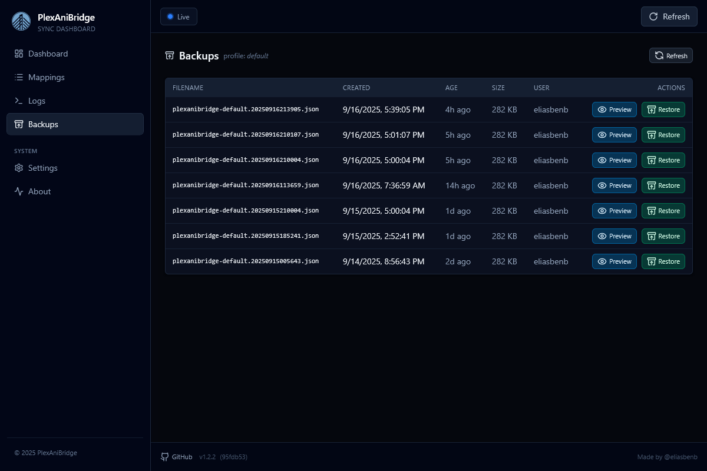

Backups

Use the backups page to browse, preview, and restore the AniList snapshots PlexAniBridge creates for you. The page has two stops: a profile picker at /backups and a detailed table at /backups/{profile}. Everything you see reflects the real files stored in PAB_DATA_PATH/backups, so you always know what is available.
Note: backups are kept for 30 days by default. Adjust BACKUP_RETENTION_DAYS if you need a longer retention window.
The profile view lists every backup with its filename, when it was created, how old it is, file size, and which AniList user it belongs to.
Actions on each row:
Previewopens the backup in a modal so you can skim the JSON of your AniList backup before doing anything permanent.Restoretriggers the restore job, and shows a toast summarising how many entries were brought back plus any warnings.